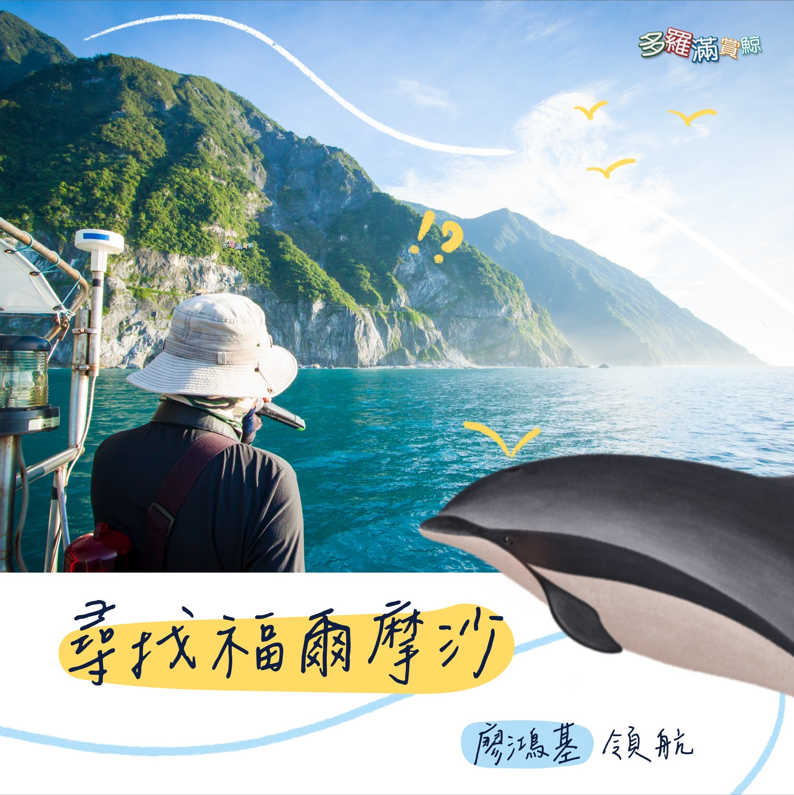
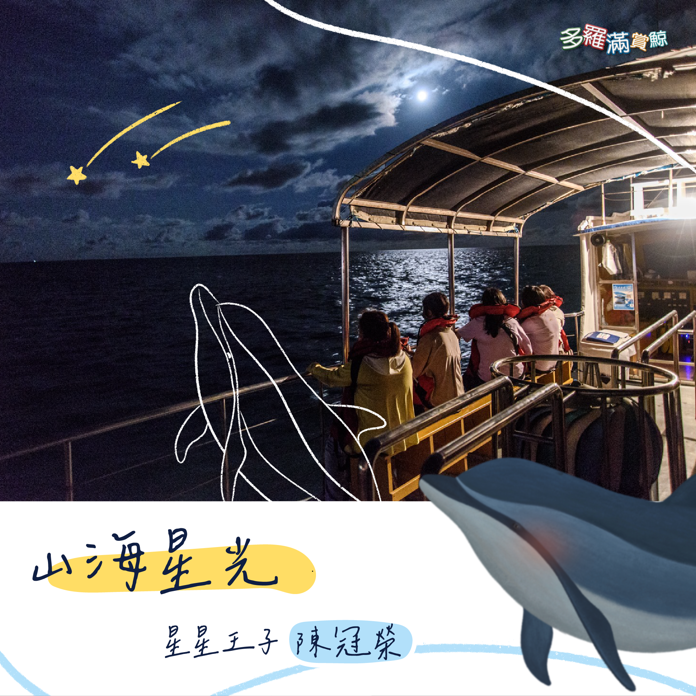
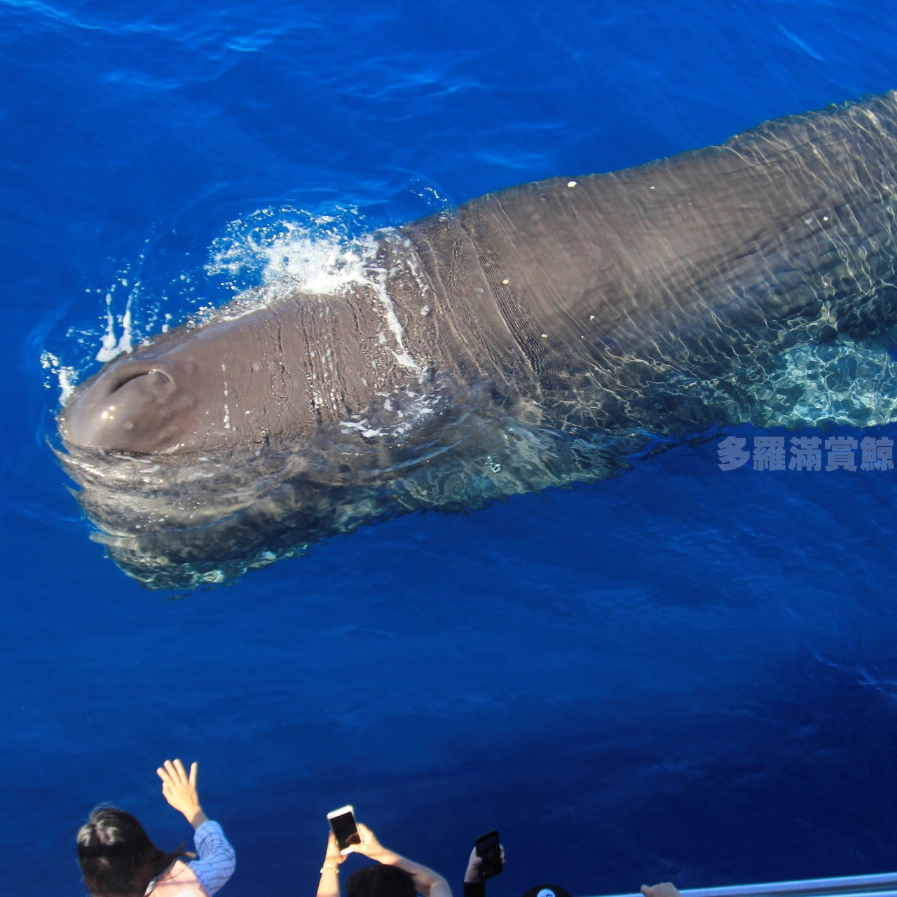

-

經典賞鯨
『多羅滿賞鯨公司』是由一群生長於花蓮，並深深熱愛這片土地的海洋伙伴所組成。
對多羅滿而言，賞鯨之旅並非只是與鯨豚打照面，而是希望藉由『黑潮海洋文教基金會』解說員專業解說，讓您了解鯨豚及花蓮特殊的海洋生態，深刻體驗人與海洋生物之間的良性互動、翩若驚鴻的鯨豚身影、太魯閣峽谷的山水景觀，立霧、三棧溪與黑潮交織而成的河海生態。NTD$ 300~800
MORE -

清水斷崖-福爾摩沙山海戀
「清水斷崖」名列台灣八大景之一，只要風和日麗，任何時候在蘇花公路上，遠遠地從崇德隧道口遠眺，其孤絕驚險的峭壁懸崖，筆直插入湛藍海面的景觀，令多少中外人士嘖嘖讚嘆稱奇。
清早從海上出發，除了可以觀賞海上晨曦之美麗景象，尤其在柔亮天光裡中央山脈顯得特別嫩綠，回首遠望岸上建物、立霧溪口、太魯閣大橋及車行蘇花公路等縮影映入眼簾，感動是遊客最直接的表情，直到抬頭親睹這座傳說的山壁矗立面前，幸福的感覺會不自禁從眼角滿溢滑落。NTD$ 300~1980
MORE - 
-

拜訪太平洋抹香鯨π計畫－跟著廖鴻基探索黑潮流域
這是一段探索台灣黑潮流域北段的航線。
黑潮，一條快速、溫暖且富含生命力的洋流，為台灣東岸帶來了豐沛的資源。再輔以多變的海底地形，讓台灣的東海岸充滿了多樣的海裡生物。
讓我們的海洋文學作家，廖鴻基老師。帶領我們一起來探索這道神秘且迷人的路線！NTD$ 300~1980
MORE